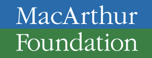
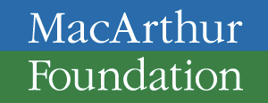

What is Hackasaurus?
The Web is the most ubiquitous communication medium of our age, and it’s where many spend hours of their day for work and play. Yet few people understand its underlying structure; few know, for instance, that every page is composed of standard parts that no company owns. Few know that the composition is malleable: typos can be fixed, canvases altered, sounds spliced, annoyances removed, features added.
The goal of the Hackasaurus backpack is to provide a set of easy-to-use tools with an accompanying curriculum that give people the power to see how everything on the Web is put together, and that invite them to play with the Web and alter it to make it their own.
By making it easy to take apart, understand, and remix the fabric of the Web, we enable anyone to turn it into a space where they can represent and define their own identity; make informed decisions about their privacy and security online; protect the openness of this digital commons for future generations; and have fun creating instead of consuming.
Tools To Try Out
The Hackasaurus backpack is currently comprised of the following experimental tools. These are still evolving, but are being actively used at events.

Web X-Ray Goggles allow anyone to easily “see through the surface” of any Web page, and obtain an intuitive understanding of how pages are composed. They can be used anywhere on the Web one hangs out, and casual use of the tool enables one to gain a rudimentary grasp of HTML, CSS, and the Document Object Model.

HTMLPad is a simple website that allows anyone to easily create a Web page, collaborate on it in real-time with friends, and share it with the rest of the world.
Learning More
To find out more about Hackasaurus and get involved, check out the Hackasaurus Wiki.
If you'd like to be notified of future updates, please follow @hackasaurus on Twitter, or Like Hackasaurus on Facebook.